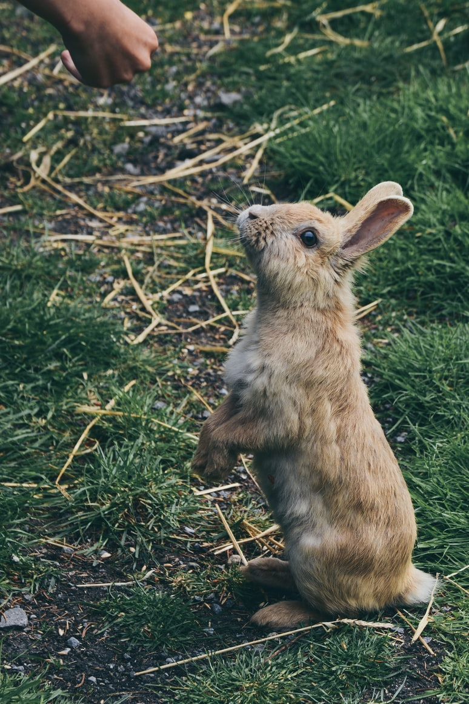

De las varias especies de conejo de cola de algodón, la más común es el conejo de cola de algodón del Este.
Este ubicuo animal puede encontrarse desde Canadá hasta América del Sur y, dentro de Estados Unidos, desde
la Costa Este hasta las Grandes Llanuras. El color de este roedor va del castaño rojizo hasta el gris, pero
todos ellos comparten el característico rasgo de la cola "de algodón", por el que reciben su nombre.
Esta especie de conejo busca su hábitat en los lindes de espacios abiertos, como campos, praderas y granjas,
aunque también se adapta a otros entornos, incluidos los habitados por el ser humano.

Se alimenta por la noche de hierbas y pasto y también es aficionado a productos hortícolas, como guisantes y,
por supuesto, lechugas. En invierno su dieta se vuelve menos refinada y consiste en cortezas, ramas de arbustos
y brotes de plantas. Durante el día, el conejo de cola de algodón suele permanecer oculto entre la vegetación.
Si es descubierto, trata de escapar de su atacante con rápidos movimientos en zigzag, alcanzando velocidades
de hasta 30 kilómetros por hora.
Las hembras dan a luz en madrigueras poco profundas, y sus crías nacen tan indefensas que se calcula que apenas
un 15 por ciento de ellas sobreviven al primer año de vida. Por fortuna para ellos, los conejos paren tres o
cuatro veces al año y en cada parto nacen entre tres y ocho crías. Las crías se hacen adultas rápidamente y pueden
valerse por sí mismas en sólo cuatro o cinco semanas. Alcanzan la madurez sexual en apenas dos o tres meses, por
lo que las poblaciones crecen a una velocidad pasmosa.
La superpoblación de conejos de cola de algodón a menudo es un problema para los agricultores. Son, además,
animales muy populares entre los cazadores.